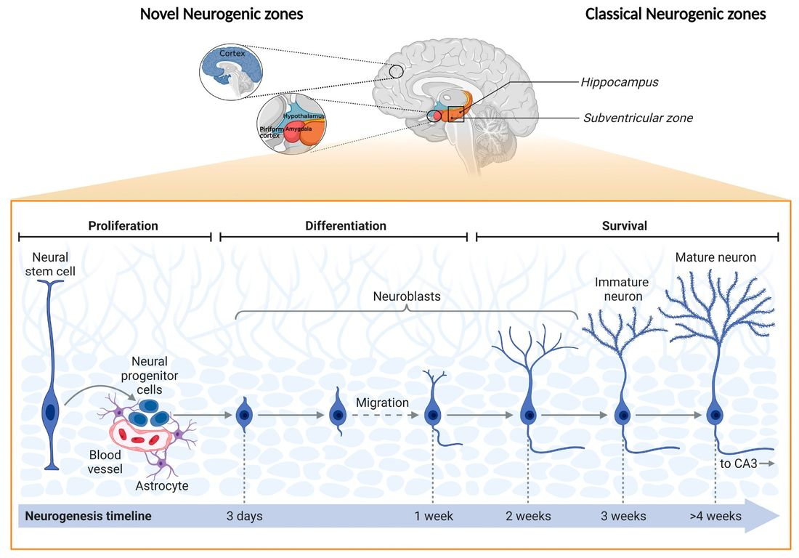
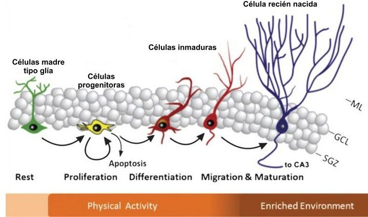
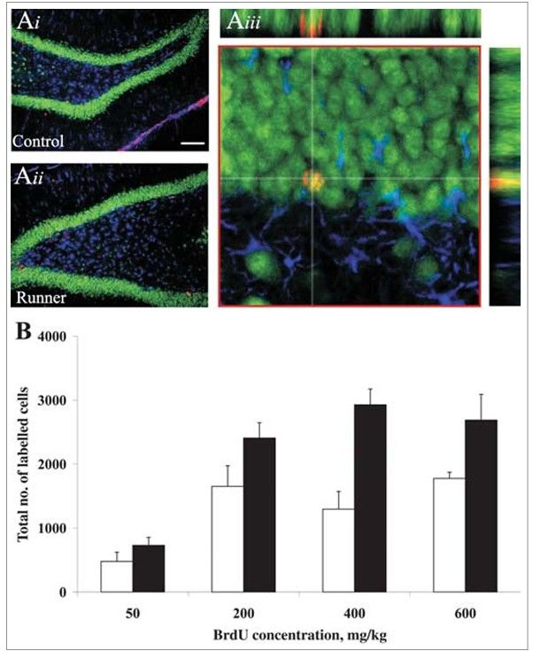

Qué cubre esta guía
Las citas remiten a la fuente y a su página o sección, por ejemplo Zeise p. 108, Purves p. 78 o apuntes, bloque III.
Fuera de alcance: la neurogénesis del desarrollo, ya cubierta en las guías 02 y 03, y el detalle histológico de Cajal, que tiene guía propia.
Lo esencial en 60 segundos
- La plasticidad reorganiza estructura y función durante toda la vida, aunque no con la misma intensidad Zeise §7.1.
- El desarrollo crea y elimina sinapsis; el adulto ajusta eficacia sináptica, pero también cambia estructura Zeise §7.2.1.
- Las ventanas críticas cierran con redes perineuronales e inhibición GABAérgica, y su clausura es difícil de revertir apuntes, bloque II.
- La sustancia gris subcortical llega a su pico cerca de los 14 años y después se poda apuntes, bloque II.
- El envejecimiento dilata los ventrículos por pérdida de parénquima, no por presión: hidrocéfalo ex vacuo apuntes, bloque II.
- La práctica amplía mapas corticales; 20 minutos a 20 Hz mejoran la discriminación táctil y 1 Hz la empeoran Zeise §7.3.3.1.
- El dogma de un cerebro adulto sin neuronas nuevas cayó con Altman, Kaplan, Nottebohm y el BrdU Altman §5.
- El ejercicio, el estrés, los antidepresivos y la microbiota modulan la neurogénesis del giro dentado apuntes, bloque VII.
La plasticidad no es una sola cosa
La palabra plasticidad viene del griego plastikos, que nombra lo formable, y su sentido original pertenece a la ciencia de los materiales, donde un objeto plástico es deformable Zeise §7.1. La neurociencia conservó esa idea: las funciones del cerebro y las estructuras que las sustentan no son rígidas ni fijas, sino que se reorganizan de manera activa según lo que les ha ocurrido. Esa definición amplia esconde una advertencia: la neuroplasticidad no es un proceso unitario, sino un conjunto de mecanismos que operan en condiciones y escalas de tiempo distintas Zeise §7.1.
Su ventaja se entiende por contraste con la herencia Zeise §7.1. La información genética y los rasgos heredados son ventajosos para la supervivencia y, sin excepción, estructuralmente fijos; para enfrentar los cambios continuos del ambiente se necesitan mecanismos adicionales que permitan adaptaciones rápidas y eficaces no especificadas por restricciones genéticas. La plasticidad es ese margen de ajuste, y tiene un costo: los cambios no siempre son beneficiosos, y existen formas maladaptativas como las distonías y el tinnitus Zeise §7.1. Tampoco se ha desarrollado hasta el máximo, porque los sistemas necesitan estabilidad y los procesos demasiado rápidos pondrían en peligro la constancia del procesamiento; hay un compromiso entre modificabilidad y estabilidad.
Los cambios abarcan casi todas las estructuras y ocurren en niveles molecular, celular y de red, con persistencias de minutos a toda la vida. La escala temporal ordena el fenómeno en tres franjas Zeise §7.2.3.
| Escala | Fenómenos asociados |
|---|---|
| Segundos a minutos | Ejercicio, comida, cultura y vida cotidiana |
| Horas a semanas | Entrenamiento, práctica, experiencia y aprendizaje |
| Meses a años | Propiedades del cuerpo, herramientas y cambios estructurales |
Fuente: Zeise §7.2.3.
El desempeño perceptivo, conductual y cognitivo no es constante, y varios factores lo empujan a cambiar: la lesión del cuerpo, del cerebro o de los nervios; el desarrollo temprano y el envejecimiento; y las limitaciones de la vida cotidiana, como la ocupación, el estilo de vida y la estimulación sensorial intensa de los lectores de Braille o los músicos Zeise §7.2.2. La práctica musical profesional exige del orden de 10.000 horas, pero incluso períodos breves de minutos pueden inducir plasticidad con mejoras significativas. El sustrato clásico es hebbiano: la alta correlación temporal entre actividad presináptica y postsináptica es la precondición para cambiar la eficacia sináptica, aunque el mecanismo exacto sigue siendo controvertido Zeise §7.2.2.
Sobre ese fondo se distinguen dos rutas Zeise §7.2.2. La de abajo hacia arriba cambia las estadísticas de entrada, y lo eficaz son la simultaneidad, la repetición y la frecuencia, con LTP y LTD como sustrato. La de arriba hacia abajo trabaja con atención, contexto, tarea, recompensa, motivación y retroalimentación, y las monoaminas median esos efectos Zeise §7.2.2. La primera produce el protocolo de estimulación; la segunda decide cuándo ese protocolo importa.
La distribución regional tampoco es homogénea Zeise §7.2.4. Todas las áreas corticales son modificables y el cerebro adulto no está cableado de manera invariable, pero la corteza somatosensorial y la visual difieren en magnitud, estabilidad y curso temporal. Se han propuesto diferencias moleculares, restricciones topológicas del gradiente retinotópico y el lugar en la jerarquía de procesamiento Zeise §7.2.4.
Lo que el desarrollo puede y el adulto no
La plasticidad del desarrollo se estudió antes que la del adulto, y el experimento que abrió el campo tiene un título casi de manifiesto: "El desarrollo del cerebro depende del entorno visual", publicado por Blakemore y Cooper en 1970. Las propiedades de las neuronas visuales, como la detección de velocidad angular, tamaño y orientación, dependían críticamente de lo que los animales habían visto durante su desarrollo, de modo que el cerebro se organiza a partir de la experiencia Zeise §7.2.1.
La distinción clásica atribuye al desarrollo mucha más reestructuración morfológica, con creación y eliminación de sinapsis y crecimiento dirigido de procesos neuronales, mientras que el adulto se limitaría a modificaciones rápidas y reversibles de la eficacia sináptica Zeise §7.2.1. Esa regla resultó demasiado simplista. En el cerebro intacto de adultos hay cambios estructurales: la LTP produce nuevas espinas en la dendrita postsináptica, las amputaciones grandes reorganizan conexiones hacia regiones vecinas, los taxistas tienen un hipocampo agrandado y los malabaristas muestran áreas corticales visuales agrandadas Zeise §7.2.1.
Aun así, las capacidades del período ontogenético son sustancialmente mayores Zeise §7.2.1. El ejemplo más claro es el cambio de la adquisición del lenguaje al hemisferio contralateral después de una lesión cerebral temprana, un fenómeno que nunca ocurre en el cerebro adulto; además, hay casos con falta total de un hemisferio y funcionamiento casi normal, lo que implica mecanismos compensatorios solo presentes muy temprano. Esas diferencias hicieron que la comunidad considerara durante mucho tiempo a los cerebros adultos como estáticos y no plásticos Zeise §7.2.1.
La primera pregunta que ordena el problema es si la maduración define el fin del período ontogenético Zeise §7.2.1. Las distintas habilidades tienen cursos temporales diversos, y aunque la maduración sexual suele tomarse como medida, en humanos la mielinización termina recién alrededor de los 30 años. La segunda es si esas capacidades se pueden reinstalar Zeise §7.2.1. Los mecanismos de la visión binocular revelaron que la maduración de la inhibición intracortical y los cambios en la matriz extracelular controlan la plasticidad del desarrollo, lo que permite especular que sería posible restaurar capacidades juveniles en el adulto. La maduración de los receptores GABA aparece como una pieza de ese cierre Zeise §7.2.1.
El adulto no es un cerebro congelado, porque conserva cambios estructurales y funcionales; tampoco es un cerebro infantil, porque perdió la facilidad para reorganizaciones masivas Zeise §7.2.1.
Ventanas que se cierran: infancia y adolescencia
Los períodos críticos son fases estrictamente delimitadas del neurodesarrollo en las que un circuito tiene máxima plasticidad intrínseca y requiere estímulo ambiental, sensitivo o motor para estructurarse bien. Coinciden con sinaptogénesis acelerada, exuberancia dendrítica y el inicio posterior del pruning, y su rasgo definitorio es la irreversibilidad al cierre, mediada por redes perineuronales y por la maduración de circuitos inhibitorios GABAérgicos apuntes, bloque II.
El ejemplo clínico más claro es la privación de estímulo en un ojo durante los primeros años, por estrabismo o catarata congénita apuntes, bloque II. Las columnas de dominancia ocular se reorganizan a favor del ojo sano y queda una ambliopía, una ceguera cortical parcial que no revierte con corrección óptica en la adultez. El mismo principio rige la adquisición fonológica del lenguaje y el apego, y es la razón por la que el tamizaje pediátrico y la intervención temprana tienen sentido apuntes, bloque II. Cuando la ventana se cierra, el circuito no queda imposibilitado de aprender, pero pierde la facilidad para hacerlo con la sola exposición.
El crecimiento volumétrico permite seguir ese cierre con números apuntes, bloque II. A mediados de la gestación el cerebro alcanza solo el 10 % de su volumen máximo, y a los 3 años llega al 80 %, sobre un sustrato de neurogénesis masiva y arborización dendrítica. Los primeros 1.000 días constituyen una ventana crítica que determina la integridad neurocognitiva a largo plazo apuntes, bloque II.
| Etapa | Cambio volumétrico |
|---|---|
| Gestación a 3 años | Crecimiento acelerado: del 10 % al 80 % del volumen máximo |
| Adolescencia | La sustancia gris subcortical llega a su pico cerca de los 14 años y luego se poda |
| Adultez temprana | La sustancia blanca crece por mielinización hasta un máximo cercano a los 29 años |
| Desde los 50 a 60 años | La sustancia blanca disminuye y el líquido cefalorraquídeo aumenta de forma exponencial |
Fuente: apuntes, bloque II.
La adolescencia no es solo una etapa de pérdida. La poda sináptica y el adelgazamiento cortical ocurren junto con la mielinización de la sustancia blanca, que continúa hasta cerca de los 29 años y hace más rápida la conducción y más fina la integración apuntes, bloque II.
Las diferencias por sexo existen como promedios poblacionales apuntes, bloque II. El pico de sustancia gris ocurre antes en mujeres, alrededor de los 10,5 a 11 años, que en hombres, alrededor de los 14,5 años, y la poda y la mielinización progresan más rápido en mujeres durante la adolescencia temprana, lo que produce una maduración anticipada de las cortezas frontal y prefrontal. En el brote puberal, los estrógenos aceleran la maduración de regiones socioemocionales y de memoria, con maduración anticipada del hipocampo, mientras que la testosterona produce un desarrollo y un pico volumétrico más prolongado en estructuras de alerta, agresividad y visoespacial, como la amígdala apuntes, bloque II. La conectómica añade que en el cerebro masculino predomina la conectividad intrahemisférica rostro-caudal y en el femenino la interhemisférica que cruza el cuerpo calloso, asociada a mayor velocidad de integración. Esas diferencias no definen fenotipos binarios: el cerebro mosaico mezcla rasgos según la carga hormonal y la plasticidad dependiente de experiencia apuntes, bloque II.
El aprendizaje también tiene una ventana práctica que se abre con el esfuerzo apuntes, bloque II. El aprendizaje pasivo, como leer, mirar o escuchar, tiene bajo costo metabólico y atencional, deja conexiones lábiles y retiene menos del 20 % a las semanas; el aprendizaje activo y experiencial, con problemas, errores y evocación forzada, produce LTP fuerte y mielinización y retiene entre 75 % y 90 %. El esfuerzo invertido al aprender es directamente proporcional a la retención a largo plazo, un principio que la clase llama dificultad deseable apuntes, bloque II.
El cerebro que envejece y el agua que ocupa el espacio libre
El envejecimiento normativo combina varios procesos de pérdida lenta: retracción de los tractos de sustancia blanca por pérdida de mielina, menor complejidad del árbol dendrítico y apoptosis neuronal de bajo grado apuntes, bloque II. Desde los 50 a 60 años la sustancia blanca disminuye y el líquido cefalorraquídeo aumenta de forma exponencial, un incremento que se lee como marcador indirecto de atrofia. Ninguno de esos cambios implica por sí solo una demencia, pero todos reducen el margen de reserva apuntes, bloque II.
El aumento del volumen ventricular es, sobre todo, un mecanismo compensatorio pasivo llamado hidrocéfalo ex vacuo o dilatación ventricular compensatoria apuntes, bloque II. La doctrina de Monro-Kellie sostiene que la bóveda craneana es un continente rígido de volumen interno constante; cuando el parénquima se reduce por atrofia, el espacio libre lo ocupa pasivamente el líquido cefalorraquídeo, de modo que los ventrículos se dilatan y los surcos y cisternas se ensanchan sin aumento real de la presión intracraneal. El ventrículo grande es consecuencia del tejido que falta y no la causa de su compresión apuntes, bloque II.
La aceleración patológica tiene patrones anatómicos reconocibles apuntes, bloque II. En la enfermedad de Alzheimer, la atrofia cortical e hipocampal dilata las astas temporales; en la enfermedad de Huntington, la degeneración de la cabeza del caudado dilata las astas frontales; y el daño vascular o estructural, como leucoaraiosis, traumatismos o encefalomalacia posterior a un accidente cerebrovascular, tracciona y dilata el ventrículo adyacente. La forma de la dilatación orienta hacia el tejido perdido apuntes, bloque II.
La diferencia clínica decisiva separa el ex vacuo de las hidrocefalias activas apuntes, bloque II. El ex vacuo es consecuencia de la pérdida de tejido, mientras que la hidrocefalia normotensiva o de Hakim-Adams y las obstructivas tienen un problema primario de dinámica del líquido cefalorraquídeo que ejerce presión hidrostática y comprime el parénquima. Confundir ambos escenarios lleva a tratar como presión lo que es atrofia, o a ignorar una presión que sí existe apuntes, bloque II.
En el lactante, los ventrículos son funcionales desde la etapa embrionaria pero mínimos al inicio. El crecimiento parenquimatoso explosivo comprime el espacio, el encéfalo tiene alto contenido hídrico y poca mielina, no hay espacio compensatorio porque es la fase de máxima ganancia volumétrica, y aunque el cráneo puede expandirse por suturas y fontanelas, la macrocefalia fisiológica la impulsa el parénquima y no el líquido apuntes, bloque II.
La práctica esculpe mapas y la corriente los mueve
Los mamíferos superiores contienen mapas topográficos de las láminas receptoras de la retina, la cóclea y la piel, es decir, mapas retinotópicos, cocleotópicos y somatotópicos, ubicados en las cortezas visual, auditiva y somatosensorial. El principio básico es que las ubicaciones adyacentes se representan en ubicaciones adyacentes de la corteza, y las excepciones, como el borde entre la cara y la mano, surgen del problema de mapear un objeto tridimensional en una superficie bidimensional Zeise §7.2.6.
La práctica modifica esos mapas Zeise §7.3.1. El estudio pionero de Elbert y colaboradores, publicado en 1995, encontró que la representación cortical de los dedos de los jugadores de cuerdas estaba ampliada respecto de controles no músicos en la corteza somatosensorial primaria. La cantidad de reorganización correlacionó con la edad en que la persona había comenzado a tocar, y el cambio fue mayor en quienes empezaron antes de los 12 años Zeise §7.3.1. Los lectores ciegos de Braille muestran mayor representación del dedo de lectura, y los músicos altamente calificados tienen ampliada la representación de los tonos de piano, pero no la de tonos puros de frecuencia similar.
La pregunta de fondo es si esos cambios son específicos o generalizados Zeise §7.3.1. En los lectores de Braille la expansión del área del dedo de lectura se relaciona con agudeza táctil mejorada, pero sus habilidades de localización espacial en esos dedos se reducen de manera significativa, lo que revela una compensación entre capacidades opuestas. Los pianistas profesionales también tienen agudeza táctil superior a los controles, y la correlación con la práctica diaria sugiere que esa ventaja se relaciona con sus habilidades musicales Zeise §7.3.1.
La morfometría basada en vóxeles confirmó que el cambio estructural ocurre en el cerebro humano sano Zeise §7.3.1. Los taxistas tienen un hipocampo posterior más grande y el volumen correlaciona con los años de experiencia; los malabaristas muestran cambios en áreas relacionadas con el procesamiento de movimientos visuales complejos; y los estudiantes de medicina aumentan materia gris en las cortezas parietal posterior y lateral durante el aprendizaje, mientras que en el hipocampo posterior el incremento es aún más pronunciado 3 meses después del examen. Esa alteración dependiente del estímulo y del contexto en la estructura macroscópica contradice la opinión tradicional de que la plasticidad cortical adulta se basa exclusivamente en cambios moleculares submicroscópicos Zeise §7.3.1.
El aprendizaje perceptivo es la forma experimental de estudiar ese proceso: entrenar y practicar los sentidos para mejorar las habilidades perceptivas, algo demostrado en todas las modalidades sensoriales. Es un aprendizaje implícito, en el que el rendimiento mejora por entrenamiento o exposición a la estimulación, y según Goldstone se basa en la impronta, la diferenciación y la unificación, aunque su base neurofisiológica sigue siendo controvertida Zeise §7.3.2.
En algunas tareas bastan unas pocas pruebas y en otras se necesitan semanas o meses; en el entrenamiento prolongado aparece una fase inicial de mejora rápida seguida de una segunda fase mucho más lenta y asintótica, y la primera se debería al aprendizaje de tareas y estrategias mientras la segunda implica cambios específicos en el procesamiento cortical Zeise §7.3.2. La especificidad es alta para los parámetros del estímulo, como ubicación y orientación, con poca generalización, lo que implica cambios en representaciones corticales tempranas. Yotsumoto y colaboradores mostraron que la activación de V1 aumentaba con la mejoría y después regresaba al nivel previo, mientras el rendimiento se mantenía Zeise §7.3.2.
De la dificultad para inducir LTP o LTD en humanos nace el enfoque inverso: diseñar protocolos de estimulación sensorial o central que cambien la organización cerebral y, con ella, la percepción y el comportamiento Zeise §7.3.3. La estimulación sensorial repetitiva ofrece control completo del tiempo y de la asignación espaciotemporal, y sus diseños se transfieren a modelos animales. La terminología es heterogénea, y el término coactivación enfatiza la actividad neuronal sincrónica Zeise §7.3.3.1.
El protocolo clave aplicado al dedo índice mostró que la estimulación tipo LTP, intermitente y de alta frecuencia a 20 Hz, baja los umbrales de discriminación táctil, mientras que la estimulación tipo LTD a 1 Hz los reduce, es decir, empeora la discriminación Zeise §7.3.3.1. Bastan 20 minutos, los efectos son específicos para el dedo estimulado y la estimulación LTD permite perjudicar deliberadamente el rendimiento. La señal BOLD reveló una ampliación del territorio que representa el dedo estimulado, y la magnitud del cambio correlacionó con la mejora perceptiva con r = 0,744 y p = 0,002 para la corteza somatosensorial primaria, pero no para la secundaria Zeise §7.3.3.1.
La dependencia farmacológica reforzó el mecanismo Zeise §7.3.3.1. La memantina, bloqueador selectivo de receptores NMDA, eliminó por completo el aprendizaje inducido por estimulación sensorial repetitiva, tanto en la medida psicofísica como en la cortical. En la dirección opuesta, una dosis única de anfetamina, bloqueador de la recaptación de dopamina y noradrenalina, produjo casi el doble de la mejora típica y de la reorganización cortical Zeise §7.3.3.1. El umbral de plasticidad ordena estos hallazgos: las entradas normales suelen quedar bajo el umbral, la atención, la recompensa y la motivación las amplifican, y la estimulación repetitiva las lleva más allá con alta frecuencia y ráfagas.
El uso clínico apunta a reforzar los procesos plásticos dentro y alrededor de áreas disfuncionales después de una lesión cerebral o un accidente cerebrovascular, y su ventaja es la naturaleza pasiva, que no exige participación activa ni atención. Se ha demostrado eficacia en pacientes con accidente cerebrovascular, lesiones cerebrales y dolor crónico Zeise §7.3.3.2.
| Técnica | Fundamento | Parámetros y notas |
|---|---|---|
| TMS o EMT | Una bobina electromagnética produce pulsos magnéticos que inducen corrientes eléctricas en el cerebro | Un pulso único permite una lesión virtual; la rTMS va de 1 Hz a 40 Hz y las frecuencias altas son más propensas a inducir convulsiones |
| TBS | Ráfagas cortas de TMS a 50 Hz durante minutos | La modalidad intermitente facilita y la continua inhibe |
| tDCS | Corriente continua de baja intensidad entre dos electrodos | De 1 a 2 mA; la anodal excita y la catódica inhibe; es barata, indolora, segura y portátil |
| tACS, tRACS y RNCS | Corriente alterna, de ondulación o ruido aleatorio | Aplicaciones comparables a la TMS |
Fuente: Zeise §7.3.3.2.
La TMS se usa clínicamente para depresión, accidentes cerebrovasculares, dolor, tinnitus, distonía y migraña Zeise §7.3.3.2. La rTMS sobre el lóbulo frontotemporal mejoró habilidades tipo sabio en 5 de 17 participantes. De la TMS y de las técnicas de corriente se sabe poco sobre los cambios cerebrales subyacentes: no dejan las redes desorganizadas, sino que conducen a un comportamiento diferente, organizado y significativo Zeise §7.3.3.2.
El dogma de un cerebro sin neuronas nuevas
Desde el comienzo de la doctrina neuronal, a fines del siglo XIX, hasta comienzos de los años noventa, el dogma central de la neurociencia fue que no se agregan neuronas nuevas al encéfalo adulto de los mamíferos Altman §1. Koelliker, His y otros encontraron que la estructura del encéfalo queda fija poco después del nacimiento, y nunca se vieron figuras mitóticas ni estadios preadultos en el encéfalo adulto. La frase de Cajal resume el dogma: "En los centros adultos, los caminos nerviosos son algo fijo, terminado e inmutable. Todo puede morir, nada puede regenerarse" Altman §1.
En la primera mitad del siglo XX hubo reportes ocasionales de neurogénesis posnatal en mamíferos, pero fueron ignorados por los libros de texto y casi nunca citados. El autor atribuye esa indiferencia al peso de la autoridad y a la insuficiencia de los métodos para detectar la división celular y distinguir glía de neuronas Altman §1.
A fines de los años cincuenta se introdujo la autorradiografía con timidina tritiada, que se incorpora al ADN de las células que se dividen y permite marcar la progenie y determinar cuándo y dónde nació Altman §2. El método se aplicó inicialmente solo al desarrollo de roedores, una preferencia que refleja la persistencia del dogma. Desde comienzos de los años sesenta, Joseph Altman publicó evidencia autorradiográfica de neuronas nuevas en el giro dentado del hipocampo, el bulbo olfatorio, la corteza cerebral de la rata adulta y la neocorteza del gato adulto Altman §2. La mayoría de esas neuronas eran pequeñas y Altman propuso que eran cruciales para el aprendizaje y la memoria.
Los trabajos aparecieron en revistas de prestigio como Journal of Comparative Neurology, Science y Nature, y aun así fueron ignorados o descartados durante más de dos décadas Altman §2. Todavía en 1970 un libro de texto autorizado negaba evidencia convincente de producción de neuronas en el encéfalo adulto. A Altman no le dieron la titularidad en MIT, se trasladó a Purdue University, se volcó a preguntas más convencionales y, sin financiamiento, sostuvo su trabajo produciendo atlas cerebrales Altman §2.
Quince años después del primer reporte llegó el apoyo de la microscopía electrónica de Michael Kaplan Altman §3. Las células marcadas con timidina en el giro dentado y el bulbo olfatorio tenían características ultraestructurales de neuronas, y no de glía; además, había evidencia de neuronas nuevas en la corteza y mitosis en la zona subventricular de macacos adultos. Kaplan fue atacado por sus afirmaciones iconoclastas, abandonó el campo y se hizo estudiante de medicina Altman §3.
La contra más influyente vino de Pasko Rakic, profesor de la Yale Medical School Altman §4. En 1984, con publicación en 1985, presentó un estudio con timidina en monos rhesus adultos en el que examinó todas las estructuras y subdivisiones principales del encéfalo, incluidas la neocorteza, el hipocampo y el bulbo olfatorio, y no encontró una sola célula marcada intensamente con características morfológicas de neurona en ningún encéfalo de ningún animal adulto. Eckenhoff y Rakic repitieron el trabajo y sugirieron que las ratas nunca dejan de crecer, argumento refutado después porque hay cepas que sí dejan de crecer y muestran neurogénesis adulta Altman §4.
La interpretación teórica de Rakic convertía un dato en una necesidad Altman §4. Una población estable de neuronas podía ser una necesidad biológica en un organismo cuya supervivencia depende de conducta aprendida adquirida durante un período largo, y la conducta social y cognitiva de los primates podría requerir la ausencia de neurogénesis adulta. El autor observa que esta es quizás la única vez en que la diferencia entre primates y no primates se atribuyó a la presencia o ausencia de neurogénesis adulta Altman §4.
La vindicación llegó por tres desarrollos: la demostración de neurogénesis en aves adultas, la introducción de nuevos métodos para marcar células nuevas y distinguir neuronas de glía, y la demostración de que la neurogénesis puede subir y bajar por variables psicológicas como el estrés, la complejidad ambiental y el aprendizaje Altman §5. A fines de los años ochenta, Nottebohm y sus colegas mostraron que el volumen de dos núcleos del canto depende, entre otros factores, del sexo, la testosterona y la estación. Los cambios estacionales y hormonales llevaron a preguntar si reflejaban el número real de neuronas, y la respuesta fue que miles de neuronas nuevas se agregan cada día Altman §6.
La prueba se construyó en tres pasos: producción de células nuevas marcada con timidina, evidencia ultraestructural de que esas células eran neuronas que recibían sinapsis y prueba funcional de que respondían al sonido con potenciales de acción Altman §6. La neurogénesis era amplia en todo el prosencéfalo aviar, incluido el hipocampo. Aun así, la resistencia persistió: los estudios se veían como una especialización exótica, explicable por la necesidad de cerebros livianos en aves voladoras y por los ciclos estacionales de canto Altman §6.
Hacia los años noventa, varios desarrollos establecieron por fin la realidad de la neurogénesis en el giro dentado de la rata adulta Altman §7. Aparecieron marcadores más prácticos: el BrdU, análogo sintético de la timidina que se incorpora durante la fase S de la mitosis y se visualiza con inmunocitoquímica sin autorradiografía, y el Ki-67, proteína endógena presente durante la mitosis y ausente en la célula en reposo. Los marcadores de tipo celular, como NSE, MAP-2, TuJ1 y NeuN, permitieron distinguir neuronas nuevas de glía Altman §7. Algunos tiñen células no neuronales y otros no tiñen todos los tipos neuronales, pero la expresión de varios antígenos se considera buena evidencia. La combinación de BrdU con marcadores de tipo celular resolvió la identificación Altman §7.
La regulación confirmó que el fenómeno no era un vestigio Altman §8. En ratas, el número de células hipocampales nuevas supera las 9.000 por día, y la neurogénesis se modula por variables experienciales. El estrés agudo y crónico la disminuye, los glucocorticoides también, y la complejidad ambiental y correr en rueda la aumentan Altman §8. La especulación de Altman recibió apoyo: el número de neuronas nuevas correlaciona con el aprendizaje dependiente del hipocampo, aprender esas tareas tiende a aumentar el número y la depleción de neuronas nuevas deteriora el aprendizaje.
El bulbo olfatorio se replicó en varios mamíferos incluidos humanos y está modulado por la experiencia olfatoria y el aprendizaje Altman §9. La corteza cerebral quedó en un estatus poco claro: varios investigadores reportaron neurogénesis cortical en hámster, rata, tití y macaco, y otros no la encontraron. Gould, Cameron y Dayer lo atribuyeron a la sensibilidad insuficiente de los métodos y al pequeño tamaño de esas neuronas Altman §9.
El debate cortical se mide en números Altman §12. Desde 1999 hay al menos cinco grupos con evidencia positiva y cerca de la misma cantidad que no la encontró, y la incidencia reportada es de 1 a 2 células por mm³. Las neuronas corticales nuevas son raras, dispersas y más pequeñas que las células piramidales Altman §12. El problema decisivo es que los estudios negativos tampoco mostraron evidencia adecuada en el giro dentado; sin control positivo, un negativo cortical no informa nada.
El caso de Altman tardó unos 30 años en ser reconocido Altman §11. Las razones del ninguneo fueron tres: no existían técnicas confiables para diferenciar neuronas pequeñas de glía, Altman era un profesor junior de psicología sin formación en autorradiografía, y el dogma estaba sostenido por los anatomistas del desarrollo de primates más poderosos de la época Altman §10.
La zona subgranular y el nicho que decide
La zona subgranular del giro dentado es uno de los principales nichos neurogénicos del cerebro adulto y alberga células madre neurales tipo 1 con morfología de glía radial apuntes, bloque VII. En condiciones basales, la mayoría permanece en quiescencia, detenida en G0, y ese estado no es reposo inactivo sino un estado regulado. La quiescencia previene el agotamiento de la reserva de células madre y mantiene una población disponible durante toda la vida, y a la vez protege el genoma porque no replicar el ADN reduce el daño por estrés oxidativo y las mutaciones apuntes, bloque VII.
Al salir de G0, la célula madre reingresa al ciclo y se divide de forma asimétrica: una célula se autorrenueva y vuelve a G0, mientras la otra genera progenitores amplificadores transitorios de tipo 2 que maduran a neuronas granulares apuntes, bloque VII.
El nicho no es solo un espacio anatómico apuntes, bloque VII. Las células madre están en contacto íntimo con capilares, células endoteliales y pericitos, y los vasos no solo aportan oxígeno y nutrientes sino que funcionan como centro regulador. Las células endoteliales secretan VEGF, PEDF, BDNF y neurotrofinas, que deciden si la célula madre se mantiene en G0, se activa o se diferencia, y los capilares aportan una matriz física que los neuroblastos usan como rieles para migrar apuntes, bloque VII. El ejercicio aeróbico activa VEGF y las vías MAPK y PI3K-Akt, que inducen ciclina D, activan CDK4/6, fosforilan Rb, liberan E2F y hacen reingresar la célula a G1; al cruzar el punto de restricción, avanza a S. La vasculatura funciona como interruptor molecular del ciclo apuntes, bloque VII.
El BDNF cumple un papel crucial en fases posteriores, en la supervivencia, la diferenciación neuronal y la integración de dendritas y axones apuntes, bloque VII. La proliferación ocupa hasta 3 días, la diferenciación va de 3 días a 2 semanas, y la supervivencia y maduración se extienden de 2 semanas a más de 4 semanas, con apoptosis de parte de los progenitores. La neurona nueva debe sobrevivir un período largo antes de integrarse, y esa demora explica por qué los efectos de una intervención no se ven de inmediato apuntes, bloque VII.
Las zonas neurogénicas se dividen en clásicas y nuevas. Las clásicas son el hipocampo, en el giro dentado, y la zona subventricular; las nuevas incluyen la corteza prefrontal, el hipotálamo, el estriado, la amígdala y la corteza piriforme apuntes, bloque VII.
El ambiente enriquecido muestra cómo la experiencia actúa sobre el nicho apuntes, bloque VII. La estimulación sensorial, cognitiva, motora y social compleja no aumenta necesariamente la proliferación de las células madre, pero incrementa la supervivencia y la integración de las neuronas nuevas y rescata a los neuroblastos de la apoptosis. A nivel microestructural produce arborización dendrítica, más espinas y angiogénesis en CA1, CA3 y giro dentado, y a nivel molecular aumenta BDNF e IGF-1 y disminuye el umbral para inducir LTP, lo que constituye la base de la reserva cognitiva apuntes, bloque VII. La neurona nueva se incorpora paso a paso al circuito del giro dentado a CA3, de allí a CA1 y de allí a la corteza. El ambiente no fabrica más células: decide cuáles sobreviven y cómo se conectan apuntes, bloque VII.
La controversia humana sigue abierta apuntes, bloque VII. Pasko Rakic ha sido el principal opositor, y su hipótesis de la estabilidad sostiene que el cerebro de primates requiere una arquitectura sináptica permanente para almacenar recuerdos, de modo que neuronas nuevas en circuitos establecidos interferirían y borrarían esa información. En roedores la neurogénesis del giro dentado está demostrada, pero en humanos la tasa cae drásticamente durante la infancia y se vuelve prácticamente indetectable en el adulto, y estudios recientes en tejido humano respaldan parcialmente el escepticismo apuntes, bloque VII. La discusión no es si existen células nuevas, sino cuántas quedan, dónde y si alcanzan para sostener una función.




Ejercicio, estrés, antidepresivos y microbiota
El ejercicio voluntario es uno de los reguladores mejor documentados apuntes, bloque VII. La inmunofluorescencia con BrdU muestra más células marcadas en el giro dentado de los ratones que corren que en los controles, el aumento se observa a cualquier dosis de BrdU y la neurogénesis llega a ser 2 a 3 veces mayor que en sedentarios. Las células nuevas se diferencian en neuronas maduras con fenotipo NeuN positivo y GFAP negativo, lo que confirma que el ejercicio produce neuronas y no solo progenitores apuntes, bloque VII.
Los mecanismos del ejercicio aeróbico y de resistencia convergen en CREB apuntes, bloque VII. El aeróbico aumenta BDNF hipocampal, la fosforilación de CREB y proteínas glutamatérgicas como el receptor NMDA; el de resistencia disminuye la IL-6, que inhibe NMDA, y aumenta el IGF-1 muscular, TrkB y PKCα. Ambos caminos confluyen en CREB, la transcripción, la LTP y una mejor memoria, y el aumento del flujo sanguíneo cerebral acompaña el proceso apuntes, bloque VII.
Cuatro mediadores explican la neurogénesis inducida por ejercicio: las β-endorfinas por la vía POMC y opiáceos, el VEGF en los nichos vasculares, el BDNF producido en el sistema nervioso central y no en el músculo, y la serotonina, cuyo aumento depende de la triptófano hidroxilasa en los núcleos del rafe y de sus proyecciones al hipocampo apuntes, bloque VII.
El estrés crónico actúa en la dirección opuesta. El estrés repetido disminuye la neurogénesis y produce atrofia de las dendritas en CA3, mediado por corticosteroides, y altera el eje hipotálamo-hipófisis-suprarrenal, con deterioro del aprendizaje y la memoria apuntes, bloque VII. Los esteroides suprarrenales y los glucocorticoides disminuyen la tasa de neurogénesis y probablemente subyacen al efecto del estrés, porque el estrés eleva esos esteroides Altman §8.
La depresión aporta el vínculo clínico más discutido apuntes, bloque VII. Se postula que una disminución de la neurogénesis hipocampal contribuye al trastorno depresivo mayor, y hay reducción del volumen hipocampal en pacientes. Los antidepresivos inhibidores selectivos de la recaptación de serotonina y la terapia electroconvulsiva aumentan la neurogénesis en animales adultos, y la latencia terapéutica de 4 a 5 semanas coincide con el tiempo que tardan las neuronas nuevas en madurar e integrarse apuntes, bloque VII. El mecanismo propuesto es la vía AMPc-CREB con aumento de BDNF, que favorece proliferación, diferenciación y supervivencia de progenitores.
El eje del estrés y la depresión se conectan por el BDNF apuntes, bloque VII. En el trastorno depresivo mayor, la hiperactividad del eje hipotálamo-hipófisis-suprarrenal y el estrés crónico disminuyen BDNF, producen atrofia hipocampal y menor neurogénesis, y comprometen la plasticidad límbica. La anhedonia se relaciona con disfunción del circuito de recompensa mesolímbico y estriatal, considerado nueva zona neurogénica, y con la atrofia hipocampal apuntes, bloque VII.
El propio material destaca las limitaciones apuntes, bloque VII. El trastorno depresivo mayor es exclusivo del humano, mientras casi toda la evidencia de neurogénesis viene de animales, de modo que el hecho de que el ejercicio aumente la neurogénesis en roedores y reduzca síntomas en humanos sugiere una relación pero no prueba causalidad. Falta determinar si la neurogénesis media el efecto terapéutico o es un fenómeno secundario, por ejemplo del BDNF, y medir neurogénesis in vivo en humanos es metodológicamente difícil apuntes, bloque VII.
La microbiota añade una vía indirecta apuntes, bloque VII. En modelos murinos, la sucralosa no produce neurotoxicidad directa, sino daño a través del eje microbiota-intestino-cerebro: disbiosis con menor diversidad alfa y depleción de Bacteroides acidifaciens, disminución del triptófano cecal y por lo tanto menos sustrato para la serotonina, y reducción de ácidos grasos de cadena corta como el acetato fecal, que afecta la barrera hematoencefálica y la activación de la microglía. La neuroinflamación de bajo grado por endotoxinas consolida fenotipos de anhedonia y desesperanza conductual en pruebas de suspensión por la cola y nado forzado apuntes, bloque VII.


Puntos de examen
- La plasticidad es la capacidad de reorganizar estructura y función, y su compromiso central es modificabilidad frente a estabilidad; la distonía y el tinnitus son ejemplos maladaptativos Zeise §7.1.
- La distinción clásica opone reestructuración morfológica en el desarrollo a eficacia sináptica en el adulto, pero el adulto también forma espinas nuevas y cambia volúmenes Zeise §7.2.1.
- La mielinización humana termina alrededor de los 30 años, y el lenguaje solo cambia de hemisferio tras una lesión temprana, nunca en el adulto Zeise §7.2.1.
- El cierre de las ventanas críticas depende de redes perineuronales y de la maduración de la inhibición GABAérgica; la ambliopía por deprivación no revierte con lentes en la adultez apuntes, bloque II.
- A mediados de la gestación el cerebro tiene el 10 % del volumen máximo y a los 3 años el 80 %; la sustancia gris subcortical tiene su pico cerca de los 14 años y la blanca cerca de los 29 apuntes, bloque II.
- El hidrocéfalo ex vacuo sigue la doctrina de Monro-Kellie, no aumenta la presión intracraneal y en el Alzheimer dilata las astas temporales mientras en Huntington dilata las frontales apuntes, bloque II.
- La estimulación a 20 Hz mejora la discriminación táctil, 1 Hz la empeora, bastan 20 minutos, el efecto es específico del dedo y la memantina lo elimina por bloqueo NMDA Zeise §7.3.3.1.
- La correlación entre ampliación cortical y mejora táctil es r = 0,744 con p = 0,002 en la corteza somatosensorial primaria, y una dosis de anfetamina casi duplica el efecto Zeise §7.3.3.1.
- La rTMS va de 1 a 40 Hz, la TBS usa 50 Hz y la tDCS de 1 a 2 mA; las frecuencias altas de rTMS son más propensas a inducir convulsiones Zeise §7.3.3.2.
- El dogma duró de fines del siglo XIX a comienzos de los noventa; Altman usó timidina tritiada, Kaplan microscopía electrónica, Rakic monos rhesus y Nottebohm aves cantoras Altman §4.
- El BrdU es un análogo de timidina que se incorpora en la fase S y se revela por inmunocitoquímica; el Ki-67 es endógeno y la combinación con NeuN permite identificar neuronas nuevas Altman §7.
- En ratas se producen más de 9.000 células nuevas por día en el hipocampo Altman §8.
- La corteza muestra 1 a 2 células por mm³ y, sin control positivo en el giro dentado, un negativo cortical no prueba nada Altman §12.
- El ejercicio voluntario aumenta la neurogénesis 2 a 3 veces, los antidepresivos tardan 4 a 5 semanas y el estrés crónico con glucocorticoides la disminuye apuntes, bloque VII.
Límites del material
- El capítulo 7 de Zeise está escaneado desde la página 287 hasta la mitad de 7.3.4, en la página 320; las secciones posteriores no están en el archivo y las figuras no fueron transcritas.
- El OCR de ese capítulo es el peor de los tres, con columnas entrelazadas y varias frases reconstruidas, por lo que las citas se hacen por sección y no por página exacta.
- La neurogénesis cortical adulta y la tasa funcional en humanos siguen en debate; el material no resuelve cuántas neuronas nuevas necesita un circuito humano para tener relevancia conductual.
- Los apuntes de clase no tienen paginación, de modo que se citan por bloque; el estudio de la sucralosa es en modelos murinos y no demuestra causalidad en humanos.
- El detalle biográfico de Cajal y la neurogénesis del desarrollo se tratan en otras guías y no se repiten aquí.
Figuras de la guía
Toca una miniatura para volver a la figura en su sección.